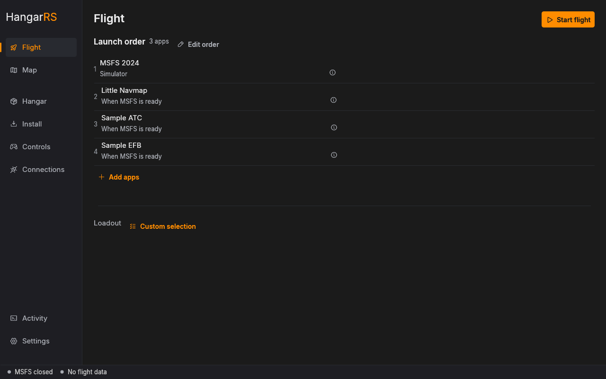
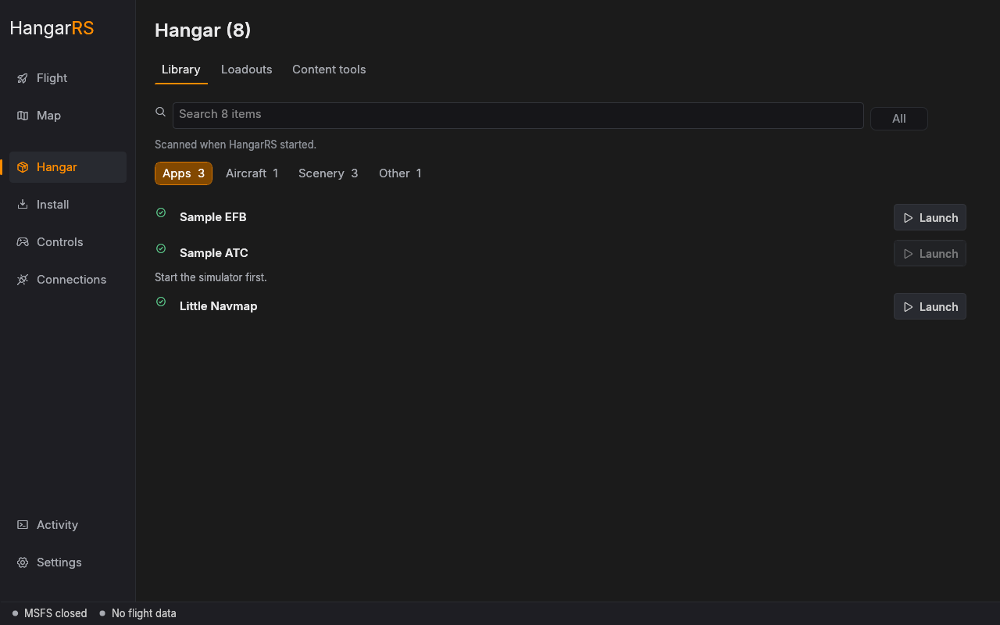
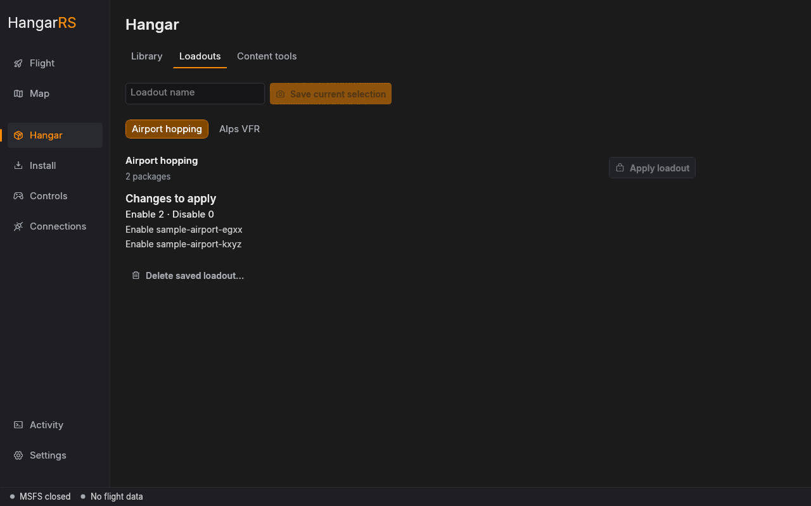
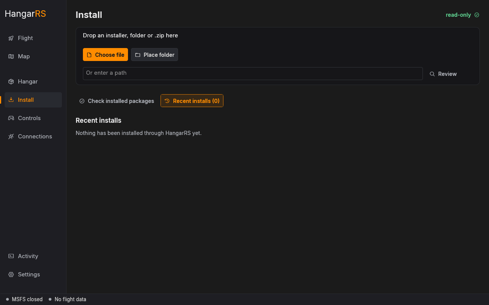
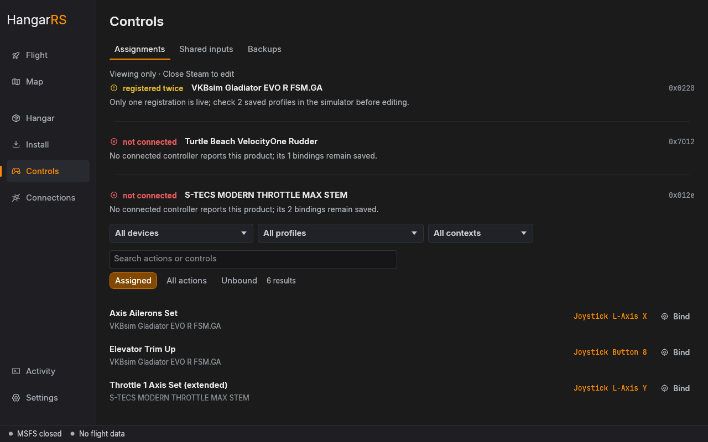
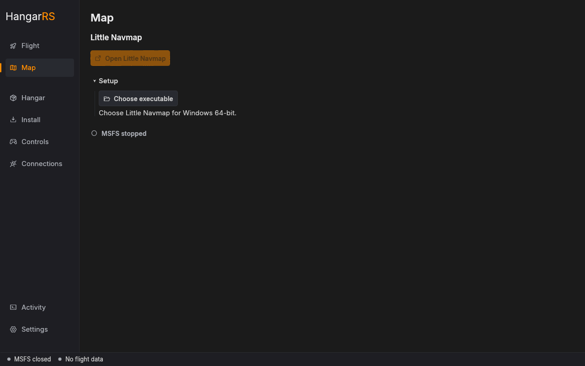
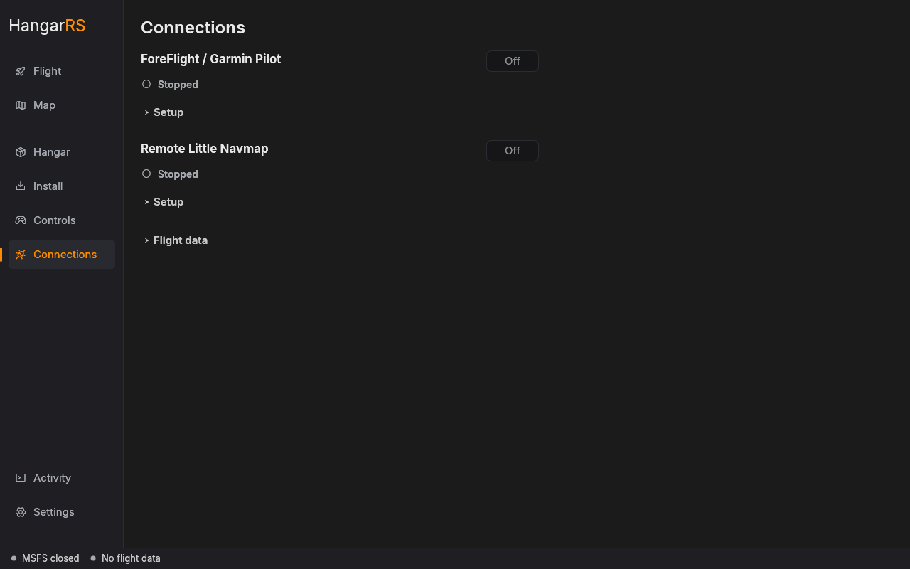
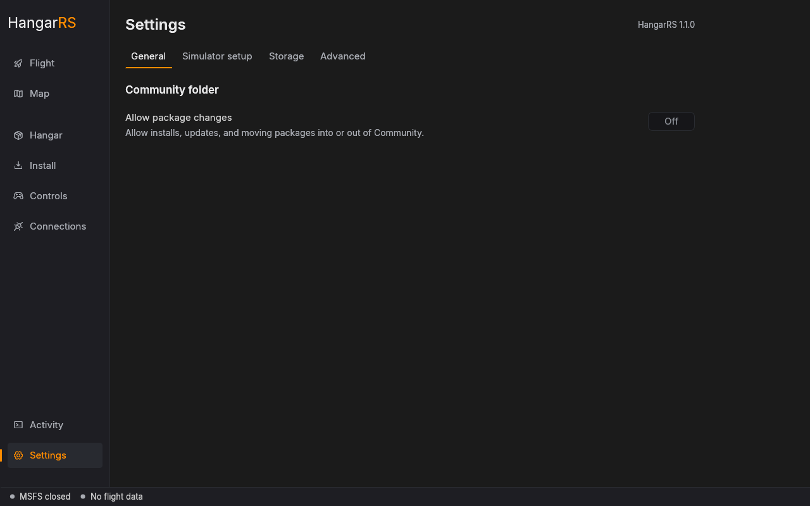

HangarRS
The flight-sim toolbox for Linux.
HangarRS puts the parts of running Microsoft Flight Simulator 2024 under Steam and Proton in one app: add-ons, loadouts, Windows installers, control bindings, the companion-app prefix, telemetry bridges and a map. It attaches to the setup you already have, and it is never required to fly — close or remove it and the simulator launches exactly as before.
Download the AppImagefrom GitHub Releases
Requirements
- x86_64 Linux with glibc 2.31 or newer (Ubuntu 20.04, Debian 11 and later).
- Microsoft Flight Simulator 2024 installed through Steam with Proton.
- One AppImage; no installation.
What it does








Screenshots are rendered from sample data, not a real machine.